批注界面：静态稿评审板
w00025 t13，第 2 轮（第 1 轮在下面）。批注的格式早已定下并实现（一段被批注的正文加一条意见，写在正文里：<comment body="意见">正文</comment>），但现在只有波浪线：意见要换到源码编辑器才看得到、改得了，也没有加批注的入口。这一轮先定意见显示在哪里。
图是在草稿 worktree 的 Lab 里用真实的 nb-ui 组件与主题变量搭的静态稿（亮色、nbook 主题），正文是写死的，不接编辑内核。
第 2 轮
第 1 轮的决定：注意力排序同意；意见“浮层和页边都要”；写意见的样子不太匹配（灰底输入框加实心蓝按钮，像表单）。这一轮问两者怎样并存，并给写意见换样子。第 1 轮的“总览做到哪一步”拿掉了：页边打开时本身就是总览。
问题 4：浮层与页边怎样并存 待定
A 页边由开关打开，缺省关
标签条右侧一个“批注 3”的开关（这一章有几条就写几），缺省关：写作时只有波浪线，光标进批注出浮层。打开后意见排到页边；编辑组窄得放不下页边时（拆成两栏、开着侧栏）退回浮层，开关仍是开着。开关按作品记住。
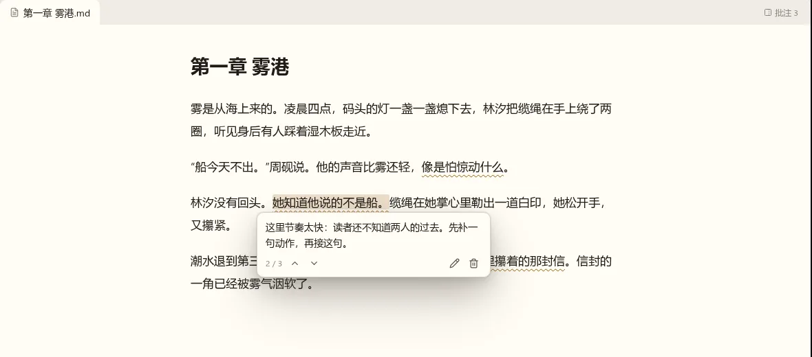
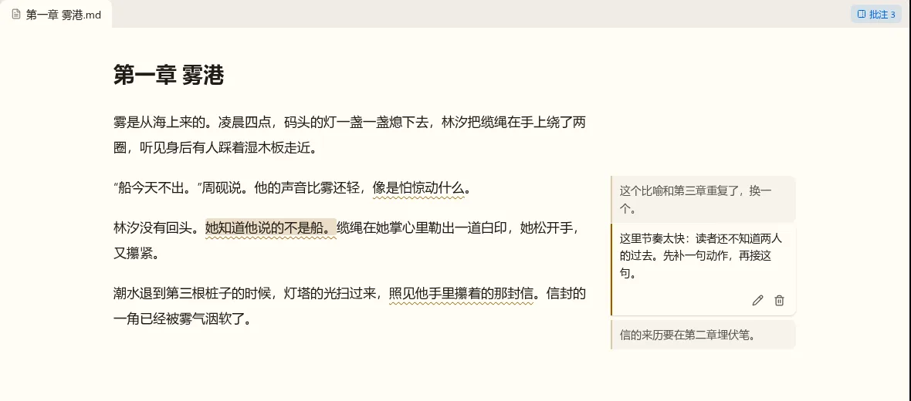
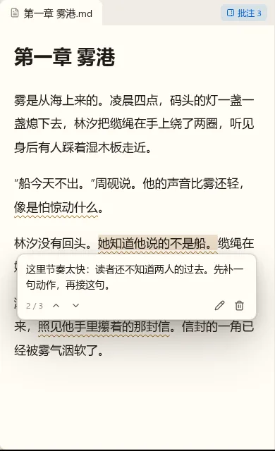
B 有地方就自动出页边
这一章有批注、编辑组又宽得放下页边时，页边一直在；窄了用浮层。没有开关。
代价：只要有批注，写作时页边就一直在视野里，和第 1 轮定的“写作时只有波浪线”相反；拆分、开关侧栏时版面会跳。
C 和 A 一样有开关，但缺省开
适合把批注当主要工作的时候（改稿、审稿）；平时写作要自己关掉。
问题 5：写意见的样子 待定
同一段“码头的灯一盏一盏熄下去”正在加批注，左边在浮层里写，右边在页边里写。
B 便签
字直接写在批注色的淡底上，没有输入框的框；用正文的字体，比正文小一号；按键提示一行小字（Ctrl+Enter 保存、Esc 取消），不放按钮。
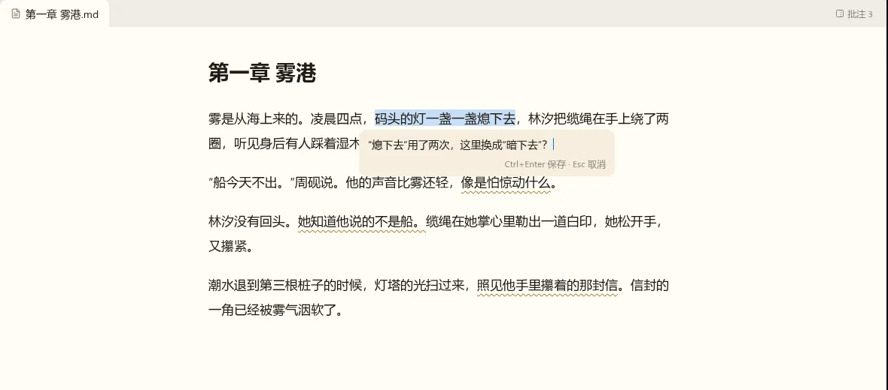
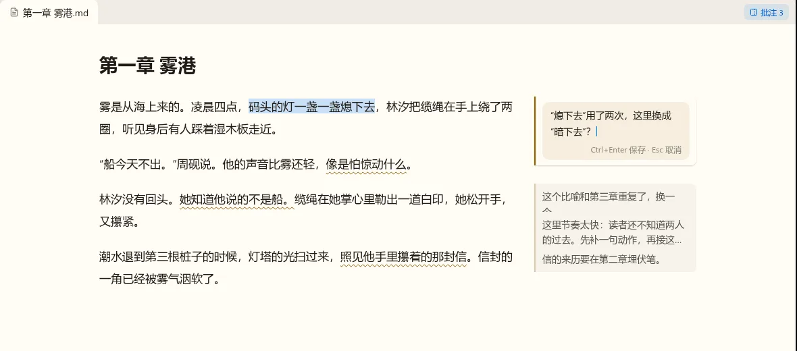
C 页边批语
没有底色，左边一条批注色的线，像写在页边的批语；保存、取消是两个小图标。
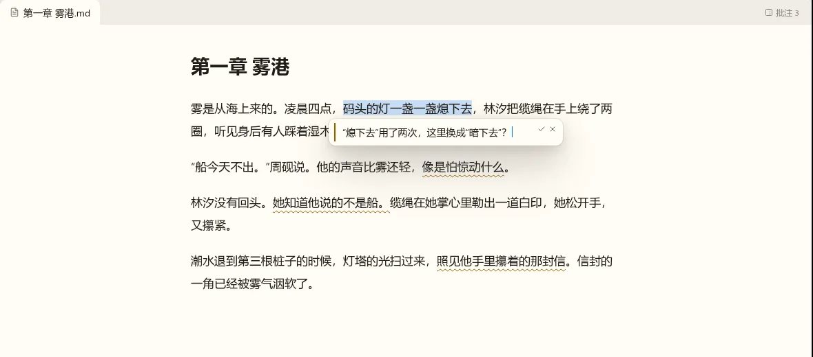
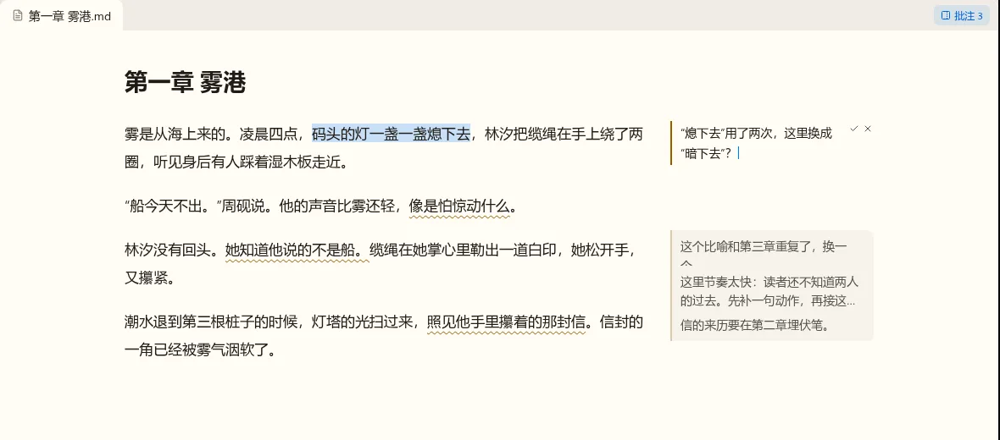
保持第 1 轮的样子
灰底输入框加“取消”“保存”两个按钮。
第 1 轮
第 1 轮 问题 1：注意力排序（已定：同意） 已定
写作是主要的事，批注是次要的。我建议按这个顺序安排：
- 写作时只有波浪线。被批注的文字带波浪线，别的什么都不显示，不占稿纸之外的地方。
- 要看的那一条才展开。光标进到一段批注里，或者点它，这一条的意见出现；光标离开就收起。
- 全部批注的总览默认不出现。逐条过一遍、或者找某一条时才用，由用户主动打开。
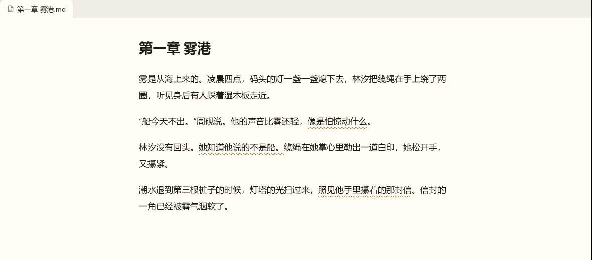
第 1 轮 问题 2：意见显示在哪里（已定：浮层和页边都要） 已定
每个候选两张图：左边是光标在第二条批注里（查看），右边是选中一段文字正在写意见（添加）。
A 浮层：贴在被批注的那一行下面
光标进入批注，意见卡片出现在这行文字下面，上面有上一条、下一条、编辑、删除。加批注时同一个位置出现输入框。
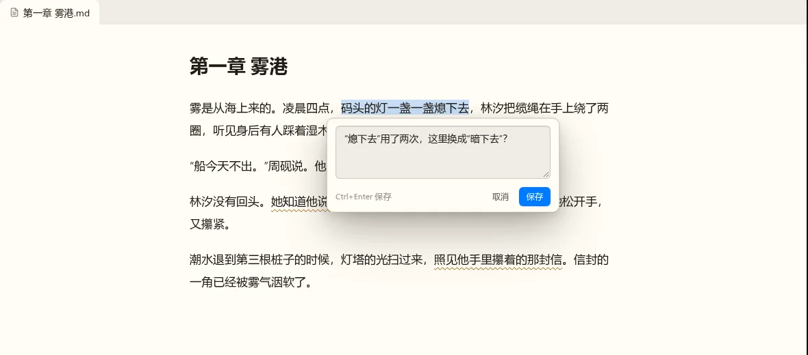
好处：不占版面，窗口多窄都是同一种样子（390px 见下图）；意见就在眼睛正看的地方。代价：会盖住下面一两行；一次只看得到一条。
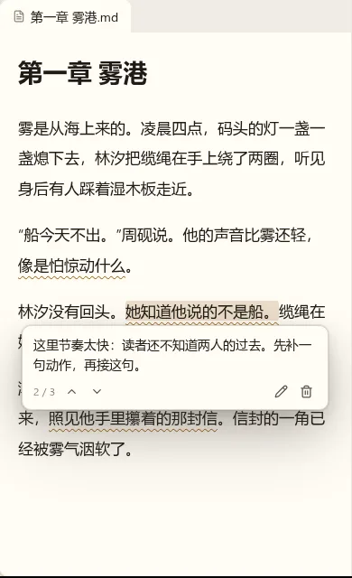
B 页边：意见排在稿纸右边，与所在段落对齐
像 Word、Google 文档。每条批注在页边有一张小卡片，当前的一条展开，其余收成两行。
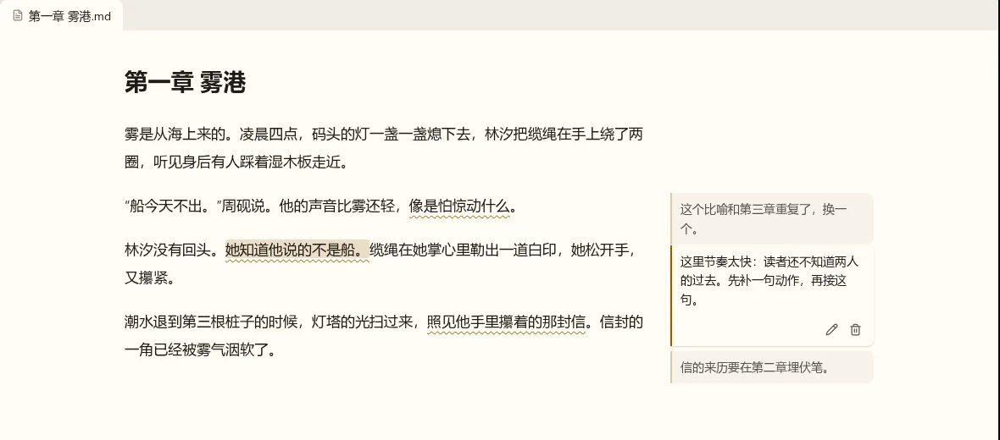
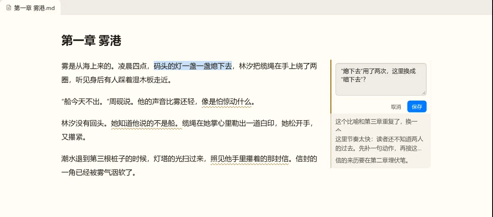
好处：不盖正文，全部批注一直看得见，位置和正文对应。代价：稿纸要往左让出约 270px，编辑组窄于约 1000px 时页边放不下（拆分成两栏、开着侧栏时就是这样），那时还得另有一种样子；批注一直在视野里，与问题 1 的“写作时只有波浪线”相反；卡片多了要互相让位，位置对不齐。
C 侧栏：编辑器右边一栏，列出这一章的全部批注
旧应用的做法（那里是 360px 的一栏）。每条写被批注的原文与意见，点一条正文滚过去；加批注时在栏里出现输入框。
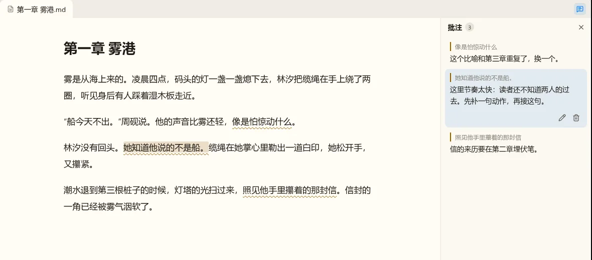
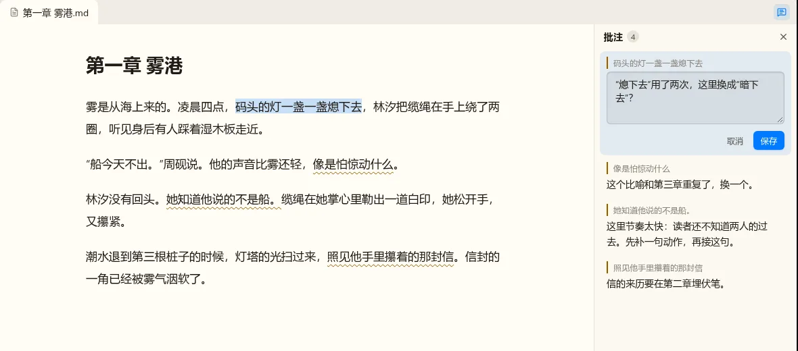
好处：适合逐条过一遍；不盖正文。代价：占 300px；看一条意见，眼睛要从正文移到右边再对回去；栏没开的时候，光有波浪线仍然看不到意见，所以它不能是唯一的入口。
现状与参照 说明
| 加批注 | 看意见 | 改、删 | 总览 | |
|---|---|---|---|---|
| 新应用现在 | 没有入口（编辑动作里有“加批注”，没接界面） | 只有波浪线；意见要到源码里看 | 改源码 | 没有 |
| 旧应用 | 选区菜单与右键，弹一个输入对话框 | 波浪线加序号；按住 Ctrl 点批注，打开右边 360px 的评论栏 | 在评论栏的卡片里 | 评论栏，默认关；编辑区窄于 700px 时盖住整个编辑区 |
| Word、Google 文档 | 选区菜单、右键、快捷键，在页边写 | 页边卡片 | 页边卡片 | 页边本身；另有评论列表 |
| Notion | 选区菜单，在文字旁的浮层里写 | 点带底色的文字，浮层 | 浮层里 | 右侧的评论栏，默认关 |
格式决定了界面里没有的东西：批注没有作者、时间、回复与“已解决”（方言 Spec 的不承诺），一条批注只有一段意见。所以卡片上不画头像、时间和回复框；“删除批注”只去掉标记，正文留着。
不单独问、按下面做的 说明
这些我按推荐做，记进待确认清单，你有不同意见直接说：
- 加批注的入口：选区菜单上加一个按钮、正文右键菜单里一项、快捷键 Ctrl+Alt+M（Word 与 VS Code 都是它）；没有选中文字时不可用。不放进固定工具栏与斜杠菜单（旧应用的斜杠命令插的是占位批注，没用）。
- 写意见：多行输入框，Ctrl+Enter 保存，Escape 取消；意见为空时保存等于取消。
- 浮层何时出现：光标进入批注就出现，不要求按住 Ctrl 点；正在打字时不弹（光标是打字移进来的不算），免得挡住正在写的地方。
- 块批注（整段被批注）：浮层贴在这一块第一行的下面。
- 两条批注重叠处：浮层里上下排两条。
- 只读文件：能看，不能加、改、删。